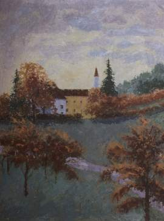
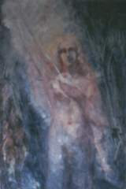

Vier wegen, vroeger en nu
In het artikel 'Vier wegen, vroeger en nu' vergelijkt Dr. Karl Gustav Bitter de vier wegen van geestelijke ontwikkeling van Christian Rosencreutz (ruim 490 jaar geleden) met het gedachtegoed van Max Prantl. Prantl noemt drie wegen. Allereerst de weg van Boeddha, een weg naar Verlichting. De tweede weg is de weg van Christus, een weg van geestelijke ontwikkeling. De derde weg is de weg van het bewust herkennen en erkennen van onze Goddelijke oorsprong oftewel het geestelijk ontwaken.
Dit is ook terug te vinden bij Rosencreutz. Maar Gustav Bitter geeft aan dat Max Prantl nog een stap verder gaat. Een gewaagde stap, zo lijkt het. Gustav gaat daarbij in op het nodige onderscheidingsvermogen om de wezenlijke boodschap van Max Prantl werkelijk te verstaan. Ook de vierde weg, zoals beschreven door Prantl, noemt Bitter. Tenslotte eindigt dr. Bitter eenvoudig: Lees het boek “Het Stralende Hart,” want het is kostbaar.
door dr. Karl Gustav Bitter
in het tijdschrift ‘Mensch und Schicksal’, januari 1950
Toen 490 jaar geleden (zo vertelt de ‘Chymische Hochzeit’) Christian Rosencreutz de wonderbaarlijke uitnodiging tot het grote werk had ontvangen, zag hij vier wegen voor zich die naar het doel leidden. Een korte maar gevaarlijke, die door rotsachtig land loopt; een langere, die weliswaar naar omwegen maar niet naar dwaalwegen leidt, die vlak en gemakkelijk is wanneer men met behulp van een magneet niet naar links en niet naar rechts afwijkt; de derde is de werkelijk koninklijke weg, die kostbare winst brengt en een wonderbaarlijk zicht geeft maar nauwelijks een op de duizend valt deze weg ten deel. De vierde weg kan door niemand gegaan worden, die nog een aards lichaam bezit. Hij is met ‘vuur en rook’ omgeven, zodat niemand het zou mogen wagen deze te naderen. Wie dus ‘ter bruiloft’ wil gaan, moet voor één van de drie wegen kiezen. Maar als hij gekozen heeft, dan moet hij op de gekozen weg blijven, kan die niet meer veranderen.
Ik was een jonge dromer, toen ik dit bijzondere geschrift voor de eerste keer las. En ik heb mij er destijds het is meer dan dertig jaar geleden erg over verbaasd. En ik heb er veel, veel over nagedacht hoe het te begrijpen is, dat iemand die tot de ‘Chymische Hochzeit’ geroepen is een definitieve, onherroepelijke beslissing moet nemen bij het kiezen van zijn weg. Tegenwoordig verbaas ik me er niet meer over. Want nu ken ik de grens, die tussen de op ieder moment te herroepen voor-beslissingen van de dromende mens en de onherroepelijke, definitieve keuze van de ontwaakte mens ligt. Die grens, die wij allemaal elke morgen symbolisch ervaren c.q. van tevoren voelen, wanneer wij uit de droom van de nacht tot het licht van de dag ontwaken.
Reeds lang ken ik het geheim van de vier wegen. Maar pas Max Prantl kon het zeggen. Wat dit kunnen-zeggen van wat tot nu toe onuitsprekelijk was voor de geestelijke ontwikkeling van de mensheid betekent, wat het met name voor de beslissende strijd tussen ‘wit’ en ‘zwart’ betekent dat in te schatten kan nog niet onze taak zijn. Daarover zal een geslacht rekenschap afleggen, dat nadenkend op onze tijd terugkijkt; wij zijn echter strijders die vooruit kijken, waarbij ons noodzakelijkerwijze de tijd en bezinning voor een dergelijke reflectie ontbreekt.
Er zijn werkelijk maar vier wegen om geestelijk te ontwaken. En ieder mens komt eenmaal bij de geestelijke drempel van het ontwaken, waar hij ophoudt een ‘natuurlijk mens’, d.w.z. een dromer te zijn de drempel waar hij voorbij de grenzen van het lichamelijke streeft; waar hem een onbedrieglijk weten tegemoet waait, dat de goddelijke wereld is, reëler dan de zintuiglijk-buitenzintuiglijke wereld der verschijnselen. De ‘goddelijke schoonheid’ voldoet hem niet meer als ‘religie’, als verbinding met God. Hij zoekt de verlossing uit de ‘eeuwige’ kringloop van het natuurlijke leven, waar hij genoeg van gekregen heeft. Hij heeft zijn ontwikkeling tot aards-unieke persoonlijkheid voltooid, hij zoekt naar nieuwe oevers, hij zoekt de weg naar ontwikkeling van de bovennatuurlijke persoonlijkheid. Dit zoeken, dit verlangen naar verlossing dankt hij aan de uitstraling van Gautama Boeddha over de hele astrale wereld, of hij deze ‘genade’, dit mysterieuze ontvankelijk worden voor het eeuwige nu bewust met de naam Boeddha verbindt of niet.
Gautama de verlichte, de Boeddha, toonde voor het eerst het doel van het leven, het doel en de zin van alle reïncarnaties. Voor het bewustzijn van zijn tijdgenoten en allen die later geboren werden en op hetzelfde niveau van ontwikkeling staan, interpreteerde hij de zaligheid van de Eeuwige Zon, haar onverstoorbaar en onverwoestbaar bestaan in de geestelijke wereld als ‘Nirwana’, als ‘Eeuwige Rust’, omdat die immers het einde, het doel van de ziele-ontwikkeling betekent.
Wie de weg van Gautama Boeddha, de eigenlijke weg van verlossing ten einde gaat, zonder zich na verlichting door de kracht van Boeddha naar Christus te wenden, wordt een unieke geestelijke persoonlijkheid, een Eeuwige Zon, eeuwig zalig in zichzelf als twee-eenheid van wil en geestesziel, verbonden met al het goddelijke, maar zonder het vermogen om God en zichzelf te kennen. Gods liefde draagt hem evenals alle lichte geesten, hij zweeft in de zonnenzee van HET, de Oneindige Liefde als een sluimerend kind dat nog niets van vader en moeder weet (Nirwana, dromende eeuwige zaligheid in de goddelijke zonnenzee). Dit doel stemt overeen met de goddelijk wil van veel kinderen van de Oneindige Liefde en daarmee stemt het ook overeen met de wil van God zelf.
De straling van Gautama Boeddha opent echter ook de harten voor een andere leider en vormgever van de zielenwereld, voor een weg van verdere ontwikkeling. Zonder verlichting tot de eeuwige geestelijke wereld door Gautama Boeddha (dikwijls gebeurt dit in een vroeger leven) is er geen begrip voor de leer van Christus. De kracht van Gautama Boeddha is de genade die tot naar Christus leidt. Voor de natuurlijke mens zijn het wezen en de leer van Christus niet te bevatten. Hij kan er niets mee beginnen. Ze blijven een vreemde wereld voor hem. Hoogstens buigt hij zich voor de christelijke leer als een ethisch ordenende macht of omdat zijn omgeving en zijn voorvaderen christenen zijn.
Christus is in zijn aardse werkzaamheid de ster van middernacht, een sterrenzon die de aards wakkere maar geestelijk nog dromende mens door de nacht naar de morgen leidt, naar het vermoedende kennen van God en zichzelf als geestelijk wezen, als kind van de Oneindige Liefde.
Evenals door de verlichtende kracht van Boeddha kan iemand ook door de ontwikkelende kracht van Christus aangeraakt en geadeld worden, zonder dat hij het bewust ervaart en met zijn naam verbindt.
Christus ontwikkelt in de geestelijk nog dromende mens het goddelijke zelfbewustzijn en het vermogen om God te kennen (‘Zonder mij komt niemand tot de Vader’).
De aardse werkzaamheid van Christus duurt evenals die van Gautama Boeddha tot aan het einde van de wereld. Zoals Gautama Boeddha steeds nieuwe geesten naar het Nirwana, naar de dromende eeuwige zaligheid of naar Christus leidt (daarover beslist hun eigen goddelijke wil, die het daarmee overeenstemmende ontwikkelingsdoel kiest), zo leidt Christus steeds nieuwe verlangende zoekers naar de ‘Vader’, naar de eeuwige zaligheid als unieke persoonlijkheden, als Eeuwige Zonnen, met het vermogen om God en zichzelf in vermoedende zin te kennen (deze weg stemt overeen met de goddelijke wil van veel geesten en daarmee ook met de wil van God), of tot aan de drempel van het ontwaken tot zonneklare helderheid, tot het zonneklaar kennen van God en zichzelf (ook daarover beslist hun eigen goddelijke wil). De christelijke mystici hebben deze mogelijkheid van zonneklaar inzicht gekozen en voorbereid. Daarom stonden meer of minder duidelijk naast of enigszins afzijdig van de eigenlijke christelijke leer (met name Meister Eckehart), zonder dat hun weg reeds als een eigen derde mogelijkheid tot eeuwige zaligheid als volledig bewuste geestelijke wezens herkenbaar was.
Dit derde doel van geestelijke ontwikkeling vereist nog één keer een volledige omslag van de tot nu toe heersende innerlijke houding. Het vereist het zelfstandige, alleen aan zichzelf verantwoordelijke bestaan als Eeuwige Zon, evenals het doel van Boeddha en Christus, maar met het volledig bewuste, zonneklare kennen van onze oorsprong en ons zelf; en het is dit kennen, dat pas de onmetelijke, hemelbestormende vreugde der ‘unio mystica’, van de volledig bewuste ontmoeting met God, de Oneindige Liefde, ontsluit.
Tot hiertoe kan iedereen de woorden van Prantl, die vlak bij de drempel van het geestelijk ontwaken staat, waarschijnlijk wel volgen. Men herkent duidelijk de twee eerste wegen van Christian Rosencreutz; wat in de ‘Chymische Hochzeit’ als eerste weg beschreven wordt is de Boeddha-weg, de tweede niet ongevaarlijke weg die over rotsen en klippen voert is zonder twijfel de weg van het kruis, de weg van Christus. Alleen dogmatische bekrompenheid zal zich eraan storen en de Nirwana-weg niet ook als een weg tot verlossing, tot zaligheid willen erkennen. Ook de weg van de mystiek, de weg van het volledige, laatste ontwaken zal voor iemand die geestelijk niet bekrompen is geldig zijn, ook al heeft hij zelf misschien niet de bedoeling om die te gaan. Dat er drie mogelijkheden tot verlossing zijn, drie wegen die met drie niveaus van innerlijk wakker-zijn overeenstemmen (ook het Boeddha-niveau is, gemeten naar ons aardse, natuurlijke ‘waakbewustzijn’, een oneindig hogere staat van wakker-zijn), valt zonder bijzondere problemen in te zien. Maar wat nu volgt, daaraan moeten de mensen wel aanstoot nemen precies zoals ze tweeduizend jaar geleden aanstoot namen aan dat woord van Christus, dat in Joh. 8: 58 geschreven staat. Want Prantl gaat verder:
‘Deze laatste omslag in geestelijke houding schenkt een nieuwe kracht, mijn kracht van transformatie tot oneindige liefde en vrijheid, van het ontwaken tot zonneklare helderheid. Deze weg is in deze tijd begaanbaar voor allen die hem willen gaan, die hem als het doel van hun geestelijke ontwikkeling herkennen (de christelijke mystici namen de straling van mij als geest nog onbewust op, omdat ik die zelf nog niet tot volle helderheid had ontwikkeld)’.
Wat? Mijn kracht, zegt hij? Ha, ik zie ze voor me, de ontstelden, die in het gunstigste (!) geval medelijden met die arme dwaas hebben, die zich als de aartsengel Michaël beschouwt! Wat een vermetelheid, wat een aanmatiging!
Maar: is het niet vele malen vermeteler, vele malen aanmatigender om over zulke dingen te kletsen als men daar niet door een engelenkracht toe geroepen is, als men alleen maar nakakelt wat anderen, geroepenen en niet-geroepenen, voordien hebben gezegd? Wie over deze dingen wil praten moet de gave der onderscheiding hebben. Anders is hij een bedrieger, in het gunstigste geval een bedrogene. De gave der onderscheiding heeft echter alleen hij, die een onderscheidende geest is. Men wordt geen baanbreker door geografische werken te bestuderen, maar door zelf met bijl en zaag het oerwoud in te gaan. En dat kan alleen degene die ermee om weet te gaan.
En toch zullen juist zij het eerlijkst verontrust zijn, die een bijzonder behagen scheppen in de berichten uit de wereld aan gene zijde, die zwelgen in bovennatuurlijke gezichten en visioenen. alsof een mens die nog op het ontwikkelingsniveau van het natuurlijke dromen staat zulke innerlijke belevenissen zou kunnen hebben! Maar als de auteur van dergelijke subtiele sensaties bescheiden doet en maar een gewoon mens wil zijn, dan gelooft men hem des te eerder. Deze bescheidenheid (Prantl hekelt die terecht als een demonische influistering) mag propagandistisch gezien dan goede werken, maar nuchter bezien is het een onnozelheid. Ieder mens heeft het recht om zich met bovenzinnelijke en bovennatuurlijke vragen bezig te houden, ze ernstig te bestuderen, erover door te denken en ze mee te beleven. Maar wezenlijke en authentieke dingen kan alleen diegene erover zeggen die zulke belevenissen in toestanden van verhoogd bewustzijn heeft, ook als dit hogere bewustzijn niet ononderbroken aanhoudt. Wie echter zijn bovenzinnelijke wijsheid uit boeken haalt of aan het oncontroleerbare gebazel van gehypnotiseerde mediums ontleent, kan niet serieus genomen worden. Het is dus geen aanmatiging, maar moed, als Prantl getuigenis aflegt van de geest, de bovennatuurlijke kracht die uit hem spreekt. En alleen ter wille van hen die nog niet eens dromen zou ik hier willen constateren dat Prantl het niet in zijn hoofd haalt om zijn aardse, lichamelijke persoonlijkheid, zijn aards begrensde bewustzijn van deze zijde met ‘Michaël’ te identificeren. Maar wat hij uitspreekt bedoelt hij zoals Paulus het bedoelde toen hij zei: ‘Weet gij niet dat uw lichamen ledematen van Christus zijn?’ en: ‘Ik leef, maar niet meer ik, maar Christus leeft in mij’.
Voor hen echter die nog altijd niet kunnen vatten hoe het bedoeld is, zij hier het woord van de Heer uit Johannes 8: 58 aangehaald, waar de mensen zo ontsteld over raakten: ‘Waarlijk, waarlijk, ik zeg u: eer Abraham was, ben ik!’ Zo sprak Christus tot de Farizeeën, toen ze hem bespotten en dachten dat hij Abraham toch niet gekend kon hebben. En toen reageerden ze geschokt en gooiden stenen naar hem.
Wat heeft Christus destijds gezegd? Eer Abraham was, JHVH! Christus heeft dit JHVH uitgesproken en daarmee diegenen geschokt die dat niet waagden en tot op heden nog niet wagen. Want nog altijd zeggen de rabbijnen, als ze JHVH lezen, niet ‘Jahwe’ maar ‘Adonai’. JHVH echter betekent: IK BEN. Zo staat er in Ex. 3 geschreven dat God in een brandende doornstruik aan zijn profeet is verschenen en tegen hem gezegd heeft: Ik ben de ‘Ik ben’ (JHVH). ‘Zo zult gij tot de zonen Israëls spreken: de ‘Ik ben’ (JHVH) heeft mij tot u gezonden’.
IK BEN wie dit als naam van God begrijpt kan zijn bijzondere zending vanuit een bovennatuurlijke kracht uitdrukken door te zeggen: Ik ben deze kracht, d.w.z. vanuit de Godsnaam JHVH is deze kracht in mij gepersonifieerd. Wie deze dingen evenwel met een ‘wetenschappelijk’ ik-begrip benadert kan het niet begrijpen. Maar zo iemand kan ook niet begrijpen dat een plant ‘wil’, omdat de onbewuste wil van de Levende voor hem onbegrijpelijk blijft, omdat hij het geestelijke enkel als functie van het aardse bewustzijn opvat.
Maar ook dat moet tot innerlijke ervaring worden. Het is ongelooflijk moeilijk om daar enigszins begrijpelijk over te spreken. En alles blijft gelijkenis dat kan echt niet anders zijn. Want hier gaat het om geestelijke dingen, maar de geest is vrij en dus ook niet aan de dwang van de logica onderworpen. Zo bedoelt Prantl het ook als hij aan het slot van zijn boek zegt: ‘Mijn woorden zijn eerlijk en kunnen tot het uiterste serieus genomen worden. Daar sta ik met mijn volle aardse en innerlijke naam voor in.Maar mijn woorden zijn noch waarheid, noch dwaling, noch leugen. Ze zijn een weg tot de waarheid’. Zo zou iedereen moeten spreken die over het onzegbare, over wat innerlijke beleefd werd spreekt.
De derde weg (om weer op het thema terug te komen) is de ‘via regia’ van Christian Rosencreutz, de koninklijke weg die destijds voor nauwelijks één op de duizend toegankelijk was. De weg die tegenwoordig voor allen toegankelijk is.
Rest nog de vierde weg, die geen aards mens mag gaan. En toch gaan velen deze weg, die door ‘vuur en rook’ gekenmerkt wordt. Het is de weg van de macht die tegelijkertijd en onontkoombaar de weg van de afvalligheid van God is. Ook daarover spreekt Prantl in zijn boek. Ook deze weg is pas begaanbaar wanneer het geestelijke ontwaken inzet, ook deze weg betreedt de mens door een definitieve en onherroepelijke, maar desondanks vrijwillig besluit. ‘Vanaf dit ogenblik van definitieve keuze roeit hij zelf zijn geweten, zijn hartscentrum uit en daarmee ook zijn goddelijke wil, d.w.z. hij laat zich door zijn ongeleide, vervormde, genot- en heerszuchtige geestesziel ontwrichten en vernietigen.Beter gezegd: de geestesziel ontdoet zich van het goddelijke, dat vervolgens door anderen wordt opgenomen. Alleen aan de ontaarde geestesziel zelf doet het zich als ontwrichting en vernietiging van het goddelijke voor. Ze vernietigt al het goddelijke in haar wezen, de oneindige liefde, waarheid en liefde, en daarmee ook het vermogen om deze te kennen, omdat het goddelijke haar enige streven naar mateloos, begerig genot alleen maar zou belemmeren en omdat het vernietigen van haar goddelijke erfdeel haar het grootste genot verschaft dat een ontaarde geestesziel, een wordende duivel kan beleven’. Een treffender schets van het demonische is nauwelijks denkbaar.
Uit wat hier gezegd is komt een vloed van vragen op. Wat is de wil, wat is een geestesziel, wat is een geest? Dat leze men in het boek. Want dit boek is kostbaar. Men kan het niet ‘be’spreken, men kan het enkel laten spreken. Steeds weer. Tot men de angst heeft overwonnen, waar het tegen strijdt. Nee, dit is geen boekbespreking. Wat ik wilde was alleen maar aantonen hoe een half millennium geleden de vier wegen van de mens waargenomen werden en hoe dit in deze tijd plaatsvindt. Lees dit boek. Dan zullen jullie weten dat jullie ‘Eeuwige Zonnen’ zijn en over deze kennis oneindig deemoedig worden en begrijpen dat iemand alleen maar vanuit oneindige liefde ‘IK BEN’ kan zeggen door welke hemelse kracht hij het ook moge zeggen.